Code
markov.town.full = read.csv("data/vote-history-markov.csv")$history
markov.H = markov.town.full[1:100]$$ \newcommand{X}{} \newcommand{Y}{} % A hex digit after # inside a macro body is eaten by build-time expansion, so digit-leading hexes spell # via .
$$
markov.town.full = read.csv("data/vote-history-markov.csv")$history
markov.H = markov.town.full[1:100]set.seed(1)
means.populations = list(
`Single bump` = rbinom(40, 100, .7)/100,
Binary = rbinom(40, 1, .7))
means.component = rbinom(40, 1, .5)
means.populations$`Two bumps` = ifelse(means.component == 1,
rbinom(40, 100, .3)/100, rbinom(40, 100, .7)/100)We have done this before: list the calls, replace the person selected by that person’s response, then add the responses. This is how we obtained the binomial and hypergeometric distributions. Here we revisit that calculation using grids alongside the tables.
Four people have responses 0,0,1,1. We call twice. What is the distribution of the pair of responses?
Let J_i identify the person selected on call i, and let Y_i be that person’s response. The subscript i is the call number: J_1 and J_2 are the first and second people called; Y_1 and Y_2 are their responses. The population is fixed, but these calls and responses are random variables because they depend on whom we select.
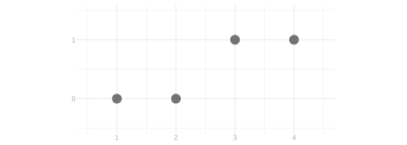
In each grid below, the row identifies the first person called and the column identifies the second. A cell is a call sequence. Its top line is the probability of that call sequence; the digits underneath are the responses in call order (for example, 01 means zero followed by one). With replacement, each of the sixteen cells has probability 1/16. Without replacement, the diagonal is impossible and each of the twelve remaining cells has probability 1/12.
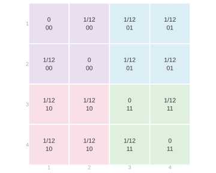
Cells with the same response sequence have the same shading. That shading is unchanged across the two schemes: changing how we sample changes the probabilities, not the responses of the people called.
| Call sequence | Response sequence | With replacement | Without replacement |
|---|---|---|---|
| (1, 1) | (0, 0) | 1/16 | 0 |
| (1, 2) | (0, 0) | 1/16 | 1/12 |
| (2, 1) | (0, 0) | 1/16 | 1/12 |
| (2, 2) | (0, 0) | 1/16 | 0 |
| (1, 3) | (0, 1) | 1/16 | 1/12 |
| (1, 4) | (0, 1) | 1/16 | 1/12 |
| (2, 3) | (0, 1) | 1/16 | 1/12 |
| (2, 4) | (0, 1) | 1/16 | 1/12 |
| (3, 1) | (1, 0) | 1/16 | 1/12 |
| (3, 2) | (1, 0) | 1/16 | 1/12 |
| (4, 1) | (1, 0) | 1/16 | 1/12 |
| (4, 2) | (1, 0) | 1/16 | 1/12 |
| (3, 3) | (1, 1) | 1/16 | 0 |
| (3, 4) | (1, 1) | 1/16 | 1/12 |
| (4, 3) | (1, 1) | 1/16 | 1/12 |
| (4, 4) | (1, 1) | 1/16 | 0 |
For example, the response sequence (0,0) comes from four call sequences: (1,1), (1,2), (2,1), and (2,2). With replacement, add four probabilities of 1/16 to obtain 1/4. Without replacement, (1,1) and (2,2) are impossible, leaving two probabilities of 1/12, which sum to 1/6.
Doing this for each response sequence produces the following distribution.
| Response sequence (Y_1,Y_2) | With replacement | Without replacement |
|---|---|---|
| (0,0) | 1/4 | 1/6 |
| (0,1) | 1/4 | 1/3 |
| (1,0) | 1/4 | 1/3 |
| (1,1) | 1/4 | 1/6 |
The distribution of the sum follows from this table. Write S=Y_1+Y_2 for the total response. The two middle rows have the same total, so combine their probabilities:
| Total s | P(S=s) with replacement | P(S=s) without replacement |
|---|---|---|
| 0 | 1/4 | 1/6 |
| 1 | 1/2 | 2/3 |
| 2 | 1/4 | 1/6 |
These operations are marginalization: collect all the possibilities that produce the value of interest and add their probabilities.
First find the distribution of one call, then replace the selected person by their response. We use the same call-sequence grids, but now we group cells by the person selected on just one call. For the first call, sum a row. For the second call, sum a column.
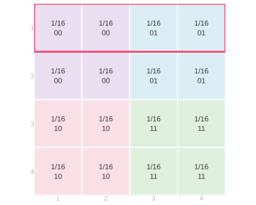
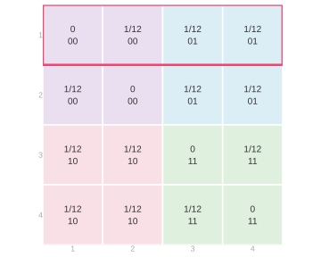
The highlighted row contains every call sequence with person 1 first. With replacement, its four probabilities sum to 4/16=1/4. Without replacement, its diagonal cell has probability zero and the other three sum to 3/12=1/4. Thus P(J_1=1)=1/4 under either scheme.
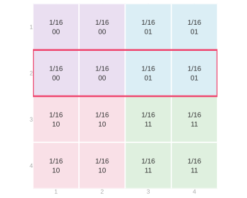
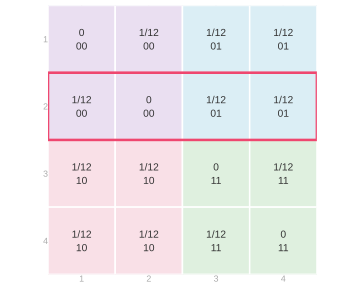
Now sum the row for person 2. The impossible call sequence without replacement has moved to (2,2), but the row total has not changed: it is again 4/16=1/4 with replacement and 3/12=1/4 without replacement. Thus P(J_1=2)=1/4 under either scheme.
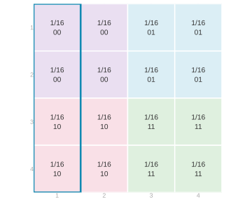
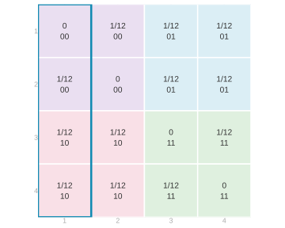
For the second call, use a column instead. This column contains every sequence with person 1 second. Its probabilities sum to 1/4 with or without replacement, so P(J_2=1)=1/4 under either scheme.
Every row and column has the same total. The resulting marginal distributions of the two calls are therefore the same under both sampling schemes:
| Person j | P(J_1=j) | P(J_2=j) |
|---|---|---|
| 1 | 1/4 | 1/4 |
| 2 | 1/4 | 1/4 |
| 3 | 1/4 | 1/4 |
| 4 | 1/4 | 1/4 |
Now make the final step from calls to responses. People 1 and 2 respond zero; people 3 and 4 respond one. For either call, add the probabilities of the two people with each response:
| Response y | People with that response | P(Y_1=y) | P(Y_2=y) |
|---|---|---|---|
| 0 | 1 and 2 | 1/4+1/4=1/2 | 1/4+1/4=1/2 |
| 1 | 3 and 4 | 1/4+1/4=1/2 | 1/4+1/4=1/2 |
This response distribution, too, is the same with and without replacement.
Suppose person 3’s response changes from one to zero, so the population is now 0,0,0,1. The call probabilities and the marginal distribution of each call are unchanged. Only the final step—grouping people by their responses—changes.
For one response, people 1, 2, and 3 now form the zero group. Person 4 is the one group. Under either sampling scheme, each response is zero with probability 3/4 and one with probability 1/4.
For a pair of responses, the (0,0) group now contains nine call sequences. Six remain possible without replacement. The (0,1) and (1,0) groups each contain three call sequences, and the (1,1) group contains only (4,4):
| Response sequence (Y_1,Y_2) | With replacement | Without replacement |
|---|---|---|
| (0,0) | 9/16 | 6/12=1/2 |
| (0,1) | 3/16 | 3/12=1/4 |
| (1,0) | 3/16 | 3/12=1/4 |
| (1,1) | 1/16 | 0 |
Combining the middle rows as before, the probabilities of totals zero, one, and two are 9/16,6/16,1/16 with replacement and 1/2,1/2,0 without replacement.
The individual response distributions agree across sampling schemes, but the response-pair distributions do not. For the population 0,0,1,1, each response is one with probability 1/2. With replacement, the probability that both are one is 1/4=(1/2)(1/2). Without replacement, it is 1/6, not 1/4.
With replacement, this product rule holds for every response pair: each joint probability is the product of the corresponding marginal probabilities. The responses are independent. Without replacement, the product rule fails: the responses are dependent. Knowing the individual distributions does not determine the distribution of the pair.
The changed population shows the same distinction. With replacement, the probability of two ones is 1/16=(1/4)(1/4). Without replacement it is zero, although each individual response still has probability 1/4 of being one. We will use this distinction when calculating expectations of products in the next chapter.
For three calls, a cell must identify three people. The three digits inside it now record the three responses in call order. The four layers below correspond to the four possible people selected on call 3. Within each layer, rows still identify the person selected on call 1 and columns the person selected on call 2. We return to the population 0,0,1,1.


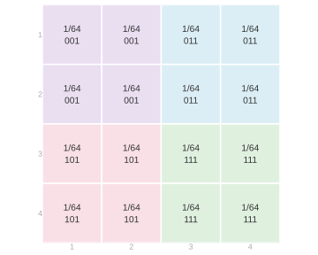
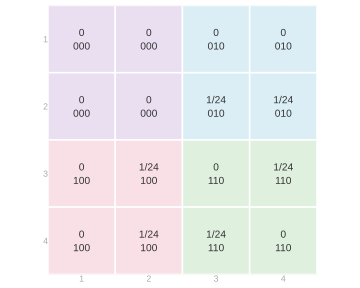
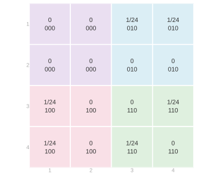
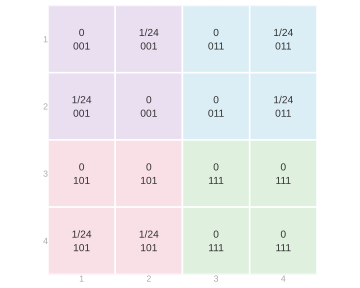
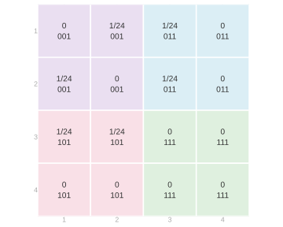
There are 4^3=64 ordered call sequences with replacement, each with probability 1/64. Without replacement, only 4\cdot3\cdot2=24 are possible, each with probability 1/24.
The method is unchanged, but the bookkeeping is growing. If we only want an average, do we need the whole distribution?
Often we do not need to know the whole distribution. We want a summary, such as the average response or total. We can calculate that summary directly, without first doing all the marginalization above.
The expectation of a random variable X is its probability-weighted average. If its possible values are x, then \mathop{\mathrm{E}}[X]=\sum_x xP(X=x). This means summing, over the horizontal axis, each value times the probability at that value. Histograms count dots: a bar’s height records the fraction at that value. Averaging the dots weights each value by that fraction. For a uniformly selected member of a finite population, those fractions are exactly the probabilities of its responses.
Does that tell us where the distribution is located—where draws are likely to be?
The purple dots are a population of values. The gray bars count them, and the green line marks their average. In this example, the expectation is near the middle of the bump, where many of the values are. It looks like a reasonable summary of location.
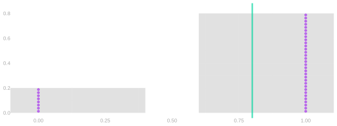
Now every value is zero or one. The average lies between them, where there are no dots at all. The same probability-weighted average no longer describes a typical individual response.
Write \theta=P(X=1) for the probability of one. Then P(X=0)=1-\theta, and \mathop{\mathrm{E}}[X]=0(1-\theta)+1\theta=\theta. The expectation is the fraction of ones in the population.
Here there are two separated groups of values. Their average falls between the bumps. Again, the average need not be a place where individual draws are likely to be.
It is reasonable to question whether any one location is a useful description of a coin flip or a pair of bumps. Why use the mean anyway? Because we will average many observations. If we average many independent draws, the average concentrates around the expectation, even when one draw is usually far from it. Linearity will explain the center of that average; variance will help us understand its spread in the next chapter.
Return to the population 0,0,1,1 and the two-call total S=Y_1+Y_2. We have its distribution already. With replacement, \mathop{\mathrm{E}}[S]=0\cdot\frac14+1\cdot\frac12+2\cdot\frac14=1. Without replacement, \mathop{\mathrm{E}}[S]=0\cdot\frac16+1\cdot\frac23+2\cdot\frac16=1.
We can also average directly over call sequences. This table lists the total response in every call cell, before combining any probabilities:
| First person J_1 / second person J_2 | 1 | 2 | 3 | 4 |
|---|---|---|---|---|
| 1 | 0 | 0 | 1 | 1 |
| 2 | 0 | 0 | 1 | 1 |
| 3 | 1 | 1 | 2 | 2 |
| 4 | 1 | 1 | 2 | 2 |
With replacement, multiply each entry by its call probability 1/16 and sum: \mathop{\mathrm{E}}[S]=\frac{(0+0+1+1)+(0+0+1+1)+(1+1+2+2)+(1+1+2+2)}{16}=1. Without replacement, omit the diagonal cells and weight each remaining entry by 1/12: \mathop{\mathrm{E}}[S]=\frac{(0+1+1)+(0+1+1)+(1+1+2)+(1+1+2)}{12}=1.
This is the same average as before. Marginalization groups equal totals and adds their probabilities first. The direct calculation weights each call sequence’s total first and then adds. Neither changes what is being averaged.
We can change the order once more. Each cell’s total is its first response plus its second. Sum all the first-response contributions separately from the second-response contributions. With replacement, the first-response calculation is \frac{4\cdot0+4\cdot0+4\cdot1+4\cdot1}{16}=\frac12. Without replacement, it is \frac{3\cdot0+3\cdot0+3\cdot1+3\cdot1}{12}=\frac12. The second-response calculation is the same, using columns instead of rows. Under either sampling scheme, \mathop{\mathrm{E}}[Y_1+Y_2]=\mathop{\mathrm{E}}[Y_1]+\mathop{\mathrm{E}}[Y_2]=\frac12+\frac12=1.
There are two things going on here. To average a sum of two things, we can take two averages and sum. To average a constant times a random variable, we multiply the random variable’s average by the constant. In other words, we can distribute expectations and can pull constants out of them. For random variables Y and Z and numbers a and b, these rules do not require independence: \mathop{\mathrm{E}}[aY+bZ]=a\mathop{\mathrm{E}}[Y]+b\mathop{\mathrm{E}}[Z]. The proof is the regrouping we just did. For finite-valued random variables, \begin{aligned} \mathop{\mathrm{E}}[aY+bZ] &\overset{\texttip{\small{\text{?}}}{definition of expectation}}{=}\sum_y\sum_z(ay+bz)P(Y=y,Z=z)\\ &\overset{\texttip{\small{\text{?}}}{changing the order in which we sum}}{=}\sum_y\sum_z ayP(Y=y,Z=z)+\sum_z\sum_y bzP(Y=y,Z=z)\\ &\overset{\texttip{\small{\text{?}}}{pulling constants out of the inner sums}}{=}\sum_y ay\sum_zP(Y=y,Z=z)+\sum_z bz\sum_yP(Y=y,Z=z)\\ &\overset{\texttip{\small{\text{?}}}{summing to obtain marginal probabilities}}{=}\sum_y ayP(Y=y)+\sum_z bzP(Z=z)\\ &\overset{\texttip{\small{\text{?}}}{pulling constants out of the remaining sums}}{=}a\sum_y yP(Y=y)+b\sum_z zP(Z=z)\\ &\overset{\texttip{\small{\text{?}}}{definition of expectation}}{=}a\mathop{\mathrm{E}}[Y]+b\mathop{\mathrm{E}}[Z]. \end{aligned} The fourth line sums rows and columns to obtain marginal probabilities. It does not factor joint probabilities. That is why independence is unnecessary.
An indicator records whether a condition holds: it is one when the condition holds and zero otherwise. For example, 1_{=j}(J_i) indicates that call i selects person j: 1_{=j}(J_i)= \begin{cases} 1 & \text{if } J_i=j,\\ 0 & \text{otherwise.} \end{cases} This is a binary random variable. Its expectation is the probability that it is one: \mathop{\mathrm{E}}[1_{=j}(J_i)] =0P(J_i\ne j)+1P(J_i=j) =P(J_i=j). We use indicators to express probabilities as expectations.
Let the fixed population responses be y_1 \ldots y_m, where m is the number of people. Write \mu=m^{-1}\sum_{j=1}^m y_j for the population mean. Call i selects person J_i and observes Y_i=y_{J_i}.
Sampling uniformly means that each call, considered on its own, is equally likely to go to anyone in the population: P(J_i=j)=1/m for every person j. Our marginalization example showed this for both sampling schemes. It does not say that different calls are independent.
Exactly one selection indicator is one, so Y_i=\sum_{j=1}^m y_j1_{=j}(J_i). Taking its expectation, using linearity and then uniform sampling, \begin{aligned} \mathop{\mathrm{E}}[Y_i] &=\sum_{j=1}^m y_j\mathop{\mathrm{E}}[1_{=j}(J_i)]\\ &=\sum_{j=1}^m y_jP(J_i=j)\\ &=\frac1m\sum_{j=1}^m y_j=\mu. \end{aligned} The same calculation works for a function f of the response: replace each population value y_j by f(y_j). Thus \mathop{\mathrm{E}}[f(Y_i)]=\frac1m\sum_{j=1}^m f(y_j).
Now take n calls and write \hat\mu=n^{-1}\sum_{i=1}^nY_i for their sample mean. Linearity implies \begin{aligned} \mathop{\mathrm{E}}[\hat\mu] &=\mathop{\mathrm{E}}\left[\frac1n\sum_{i=1}^nY_i\right]\\ &=\frac1n\sum_{i=1}^n\mathop{\mathrm{E}}[Y_i] =\frac1n\sum_{i=1}^n\mu =\mu. \end{aligned}
The bias of an estimator is the difference between its expected value and the value of the thing it estimates. Here that difference is zero: the sample mean is an unbiased estimator of the population mean. This is true with or without replacement. The calculation used uniformity of each call and linearity, not independence.
Why care? If we calibrate intervals to cover the estimator’s mean 95% of the time, how often will they cover the thing we are estimating? For an unbiased estimator, those centers agree. For a biased estimator, they do not. The distinction matters for coverage even if the sampling distribution has the same shape and spread.
Consider the vote histories of a small town. Each dot is a resident, and its value is how many of the last five elections they voted in. The histogram counts these same residents. The blue region selects those who voted in at least four elections. Replace each selected resident’s value by one and each remaining value by zero. Averaging these indicators counts the selected residents and divides by the population size. This is the fraction in the blue region. For a random variable X and a threshold t, write 1_{\ge t}(X) for the indicator that X\ge t. More generally, \mathop{\mathrm{E}}[1_{\ge t}(X)] =0P(X<t)+1P(X\ge t) =P(X\ge t).
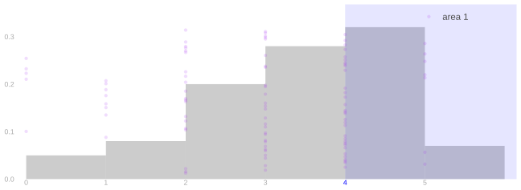
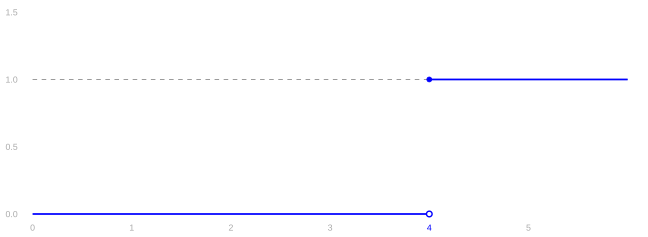
The town has 100 residents; 39 are in the blue region. Their indicator average is (61\cdot0+39\cdot1)/100.
Suppose X is nonnegative and t>0. Compare the indicator with the ramp X/t. Below the threshold, the indicator is zero and the ramp is nonnegative. At or above the threshold, the indicator is one and the ramp is at least one. At every possible value, 1_{\ge t}(X)\le\frac Xt. In the picture, dot area represents the function value. Replacing the indicator by the ramp never decreases a dot’s area. The unit of area stays fixed: an indicator value of one and a ramp value of one have the same area.
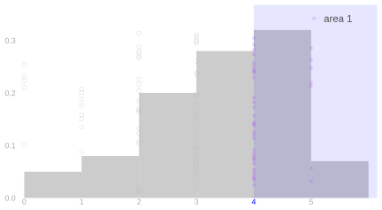
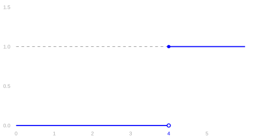
The graph on the right is the indicator function: zero below the threshold, one at or above it. On the left, the area of each resident’s dot is that indicator value. Averaging these zero-or-one areas produces the fraction of residents in the selected event.
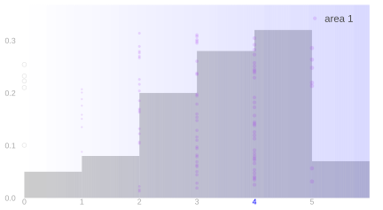
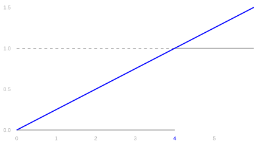
Now replace the indicator by the ramp. Each dot’s area is its value divided by the threshold. Below the threshold, a zero area can only increase. At or above the threshold, the area is at least one. The ramp therefore has an average at least as large as the indicator’s average. Both pictures use the same unit of dot area, so this comparison is visible rather than rescaled away.
An average preserves this comparison. Every probability weight is nonnegative, so a pointwise larger function has an expectation at least as large. This property is called monotonicity. Combining it with our indicator calculation and linearity proves Markov’s inequality: \begin{aligned} P(X\ge t) &=\mathop{\mathrm{E}}[1_{\ge t}(X)]\\ &\le\mathop{\mathrm{E}}[X/t]\\ &=\frac{\mathop{\mathrm{E}}[X]}t. \end{aligned}
For negative x, the indicator is zero but x/t is negative. The ramp no longer bounds the indicator. A centered random variable can have mean zero while some of its values exceed one: its positive and negative values cancel in the mean.

Can we use Markov to calibrate an interval for a population mean? Consider a binary response with population frequency \theta and sample frequency \hat\theta, using uniform sampling as above. We know \mathop{\mathrm{E}}[\hat\theta]=\theta. Markov implies that, with probability at least 97.5\%, 0.025\hat\theta\le\theta. Apply the same argument to 1-\hat\theta, whose expectation is 1-\theta. With probability at least 97.5\%, \theta\le1-0.025(1-\hat\theta). Either inequality can fail with probability at most 2.5\%, so the probability that at least one fails is at most 5\%. We have a guaranteed 95\% interval, \left[0.025\hat\theta,\;1-0.025(1-\hat\theta)\right]. Its width is 0.975. If our observed frequency is 0.7, the interval is [0.0175,0.9925]. We have ruled out almost nothing.
Compare this with the bootstrap/binomial intervals. For binary responses, resampling from the observed sample produces the binomial model with its success probability set to \hat\theta. Those calibrated intervals narrow as the sample grows. The Markov interval above does not: the expectation of the sample frequency remains \theta for every sample size.
mcal.theta = 0.7
mcal.n = c(20, 80, 320)
mcal.p = lapply(setNames(mcal.n, mcal.n), function(nn)
with_seed(rbinom(100, nn, mcal.theta)/nn))
mcal.lo = mcal.hi = list()
mcal.lo$markov = lapply(mcal.p, function(p) 0.025*p)
mcal.hi$markov = lapply(mcal.p, function(p) 1-0.025*(1-p))
for (nm in names(mcal.p)) {
nn = as.numeric(nm)
hw.plugin = vapply(mcal.p[[nm]], function(pp) width_binom(pp, nn)/2, numeric(1))
mcal.lo$plugin[[nm]] = mcal.p[[nm]]-hw.plugin
mcal.hi$plugin[[nm]] = mcal.p[[nm]]+hw.plugin
}The panels show the same construction for three sample sizes. Each purple dot is a sample frequency. For one highlighted sample, the bootstrap/binomial interval is pink; the dark interval is Markov’s. The green line is the population frequency. Both intervals use the same sample.
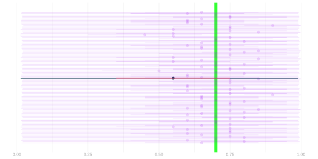
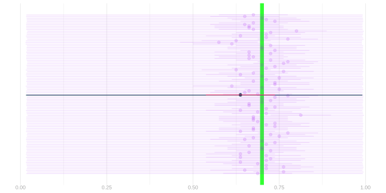
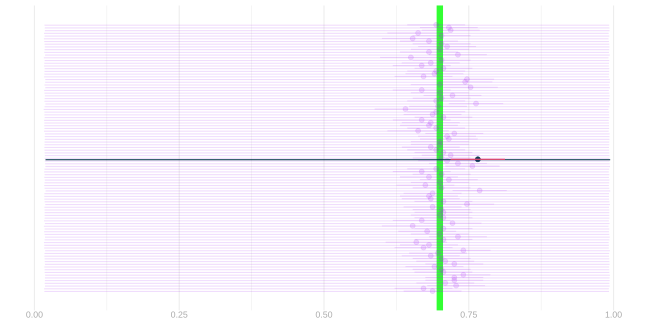
The Markov guarantee is valid without knowing the full sampling distribution, and even without independence. The bootstrap/binomial calibration uses more information and is much more informative here; its plug-in calibration is not itself a distribution-free guarantee. What can we learn about the narrowing spread without calculating the full distribution?